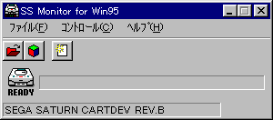

★Graphic Tools Guideグラフィックツールガイド
★SS Monitorユーザーズマニュアル
★Graphic Tools Guideグラフィックツールガイド
★SS Monitorユーザーズマニュアル
▲
戻る｜
■
SS Monitorユーザーズマニュアル
２．メニュー

-
■「ファイル」メニュー
- モニタの基本コントロールを行います。また、終了の処理もこのメニューで実行します。
- ◆モニタロード
- モニタプログラムをダウンロードします。通常は利用しません。
- ◆COFFを開く（SS Debugのみ利用可能）
- COFFファイル（実行ファイル）をダウンロード→実行します。
- ◆バイナリを開く（SS Debugのみ利用可能）
- バイナリファイルをダウンロードします。
- 【ダイアログボックス】
- アドレス
ダウンロード先のアドレスを１６進数で指定します。
- VDP1
VDP1の先頭アドレス（$25c00000）を指定します。
- VDP2
VDP2の先頭アドレス（$25e00000）を指定します。
- SGL
SGLのユーザー領域の先頭アドレス（$06004000）を指定します。
- COL
カラーRAMの先頭アドレス（$25f00000）を指定します。
- USER
予約ボックスに入力されたアドレスを指定します。
- ◆終了
- アプリケーションを終了します。
■「コントロール」メニュー
- ターゲットの基本コントロールを行います。
- ◆ビューワ実行
- 「SS Viewer」をダウンロード→実行します。通常は利用しません。
- ◆PC設定（SS Debugのみ利用可能）
- プログラムカウンタを設定します。プログラムは停止します。
- 【ダイアログボックス】
- アドレス
ダウンロード先のアドレスを１６進数で指定します。
- SGL
SGLのユーザー領域の先頭アドレス（$06004000）を指定します。
- USER
予約ボックスに入力されたアドレスを指定します。
- ◆実行（SS Debugのみ利用可能）
- 現在のプログラムカウンタより、プログラムを実行します。
- ◆停止（SS Debugのみ利用可能）
- プログラムの実行を停止します。
- ◆リセット
- ターゲットをリセットします。
■「ヘルプ」メニュー
- 「SS Monitor」の使い方を説明するヘルプファイルを表示します。また、「SS Monitor」の情報を表示します。
- ◆目次
- ヘルプファイルの目次を表示します。
- ◆バージョン情報
- 「SS Monitor」のバージョン等の情報を表示します。
▲
戻る｜
■
★Graphic Tools Guide
★SS Monitorユーザーズマニュアル
Copyright SEGA ENTERPRISES, LTD,. 1997